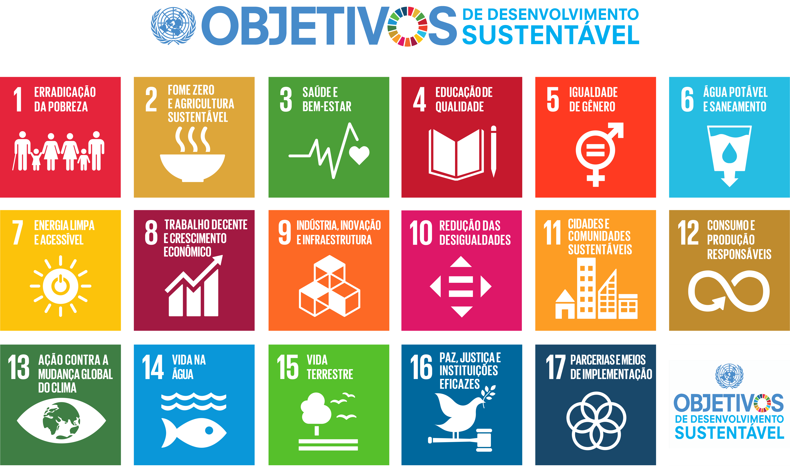

Backdrop Filter
Este cartão utiliza backdrop-filter: blur(10px).
Observe a imagem através do cartão. A imagem fica desfocada atrás dele, enquanto o texto permanece nítido.
A leitura do texto é facilitada pela sombra escura criada com o text-shadow.
Veja todas as connfigurações do CSS no arquivo estilo.css